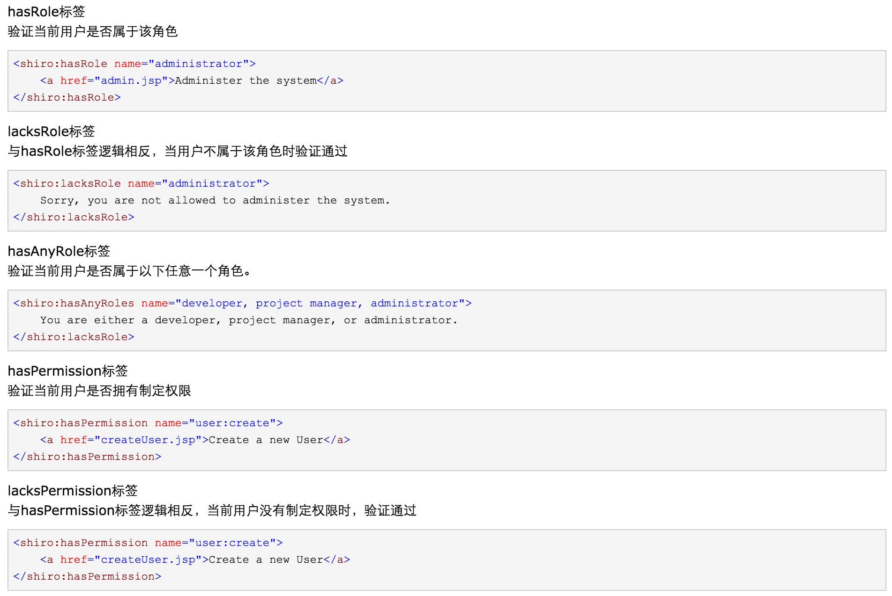

1. 概述
- Shiro：Apache提供的基于Java的安全框架
- 传统认证模式：几乎所有项目都会包含登录，权限或角色检测的功能，传统的认证模式
- 用户在进行登录后验证用户名和密码
- 用户登录后通过登录验证过滤器保证尚未登录的用户无法进行资源访问(过滤器提供的是资源保护)，当权限分等级时需要在过滤器提供复杂的路径
- 用户在登录后可以进行的操作需要划分角色和权限，需要在控制层进行当前用户角色检测以及权限检测
- 在开发中业务层的操作可能会单独独立出来成为一个独立的业务接口，通过WebService进行发布，此时业务层需要进行角色和权限检测
- 目前主流的安全框架：Spring Security, Shiro
2. Shiro提供的功能
- Authentication : 身份验证/登录，验证用户是否拥有相应的身份
- Authorization : 权限验证，验证某个已认证的用户是否拥有某个权限，即判断当前用户可以进行的操作
- Session Manager : 会话管理，用户登录就是一次会话，在没有退出之前所有的信息都会在会话中，Shiro可以为JavaSE环境提供Session
- Cryptography : 加密，保护数据的安全性
- Web Support : Web支持，可以非常容易的集成到Web环境下
- Caching : 缓存，比如用户登录后，其用户信息，拥有的角色和权限不必每次查询，以提高效率
- Concurrency : Shiro支持多线程应用的并发验证，即如果在一个线程中开辟另一线程，能将权限自动传播过去
- Testing : 提供测试支持
- Run As : 允许一个用户假装另一个用户的身份进行登录
- Remember Me : 记住我，一次登录后下次会话不用登录
3. Shiro架构
- Subject : 应用代码直接交互的对象，Subject代表当前用户，与Subject的所有交互都会委托给SecurityManager
- SecurityManager : 安全管理器，所有与安全相关的操作都会与SecurityManager交互，且其管理着所有Subject，可以看做是Shiro的核心，负责与Shiro的其他组件进行交互
- Realm : Shiro从Realm获取安全数据(如用户,角色,权限)，就是说SecurityManager要验证用户身份，需要通过Realm获取相应的用户进行比较以确定用户身份是否合法，也需要从Realm得到用户相应的角色/权限进行验证用户是否可以进行从操作
- Authenticator : 负责Subject认证，是一个扩展点，可以自动以实现，可以使用认证策略，即什么情况算用户认证通过了
- Authorizer : 授权器，即访问控制器，用来决定主题是否有权限进行相应的操作，即控制这用户能访问应用中的哪写功能
- SessionManager : 管理Session声明周期的组件，而Shiro并不仅仅可以在Web环境中使用，也可以在普通javaSE中使用
- CacheManager：缓存控制器，来管理用户，角色，权限等的缓存
- Cryptography : 密码模块，Shiro提供了一些常见的加密组件用于加密和解密
4. 环境搭建
- 加入Shiro需要的jar包 : log4j.jar, shiro-all.jar, slf4j-api.jar, slf4j-log4j.jar
- 参照shiro-root/sameples/quickstart/src/main/*创建配置文件
- 主函数

5. Spring整合Shiro
- 加入Spring和Shiro的jar包
- 配置Spring和Spring MVC
- 在web.xml中配置ShiroFilter

- 在applicationContext.xml中配置Shiro
6. url匹配
- 通过url配置可以指定特定页面受到保护，只有通过某种权限才可以进行访问
- 配置格式 : 路径 = 权限[参数]
- anno表示可以被匿名访问,authc表示必须经过认证才可以访问
- url模式使用Ant风格模式
Ant路径通配符支持?, *, **，通配符匹配不包含/- ? - 匹配一个字符 e.g. /admin?可以匹配/admin1但不可以匹配/admin/
- * - 匹配0个或多个字符串
- ** - 匹配0个或多个路径
- url匹配顺序：url采用第一次匹配优先的顺序
7. 认证
- 认证思路分析
- 获取当期Subject : 调用SecurityUtils.getSubject()方法
- 测试当前用户是否已被验证 : 调用Subject的isAuthenticated()方法
- 若没有验证，则将用户名和密码封装为UsernamePasswordToken对象
- 执行登录 : 调用Subject的login(Authenticated)方法
- 自定义Realm方法，从数据库中获取对应安全记录，返回给Shiro
- 实现org.apache.shiro.realm.AuthenticatingRealm类
- 实现doGetAuthenticationInfo(AuthenticationToken)方法
- 由Shiro完成对密码的比对
- 认证的实现
- 登录表单
- 登录控制器
- Realm
- 盐值加密
- 在Spring的Realm配置中，配置匹配的凭证
- 在Realm的实现类中，返回带有盐值加密的账户信息
- 在单元测试类中生成盐值加密后的字符
- 多Realm验证
- 在Spring中配置认证器和Realm
- 将SecurityManager配置中的Realm改为认证器
- 多Realm下的认证策略
- FirstSuccessfulStrategy : 只要一个Realm验证成功即可，只返回第一个Realm身份验证成功的信息，其他的忽略
- AtLeastOneSuccessStrategy(default) : 只有一个Realm验证成功即可，将返回所有身份验证成功的认证信息
- AllSuccessfulStrategy : 所有Realm全部验证成功才算成功，如果有一个验证失败则失败
- 配置验证策略的方法
8. 授权
- 授权的基本概念
- 授权：也成为访问控制，即在应用中控制谁访问哪些资源(访问页面/编辑数据/页面操作等)
- 主体(Subject) : 访问应用的用户，在Shiro中使用Subject代表用户，用户只能授权后才能允许访问相应资源
- 资源(Resource) : 在应用中用户可以访问的URL，比如访问JSP页面、查看或编辑数据、访问某个业务逻辑、打印文本等
- 权限(Permission) : 安全策略中的原子授权单位，通过授权我们可以表示在应用中用户是否有操作某个资源的权力
- 权限的粒度：粗粒度权限-功能模块的权限; 细粒度权限-实例级别的权限(操作某个用户)
- 角色(Role) : 权限的集合，一般情况下会赋予用户角色而不是权限，使用户拥有一组权限
- URL的角色检测 : 在Spring中配置Shiro的过滤器中配置，格式： url = roles[角色]
- 授权的实现
将自定义的Realm继承AuthorizingRealm，在doGetAuthorizationInfo方法中实现授权，该方法将会自动被Shiro回调
- Shiro标签
- 导入标签库 :
<%@ taglib uri="http://shiro.apache.org/tags" prefix="shiro"%> - 常用标签 
- e.g.
<h2>用户 : <shiro:principal></shiro:principal></h2> <shiro:hasRole name="user"> 您的角色是用户,享有用户的操作权限 </shiro:hasRole> <shiro:hasRole name="admin"> 您的角色是管理员,享有用户和管理员的操作权限 </shiro:hasRole>
- 导入标签库 :
- 权限注解
- 常用注解
- @RequiresAuthentication : 表示当前Subject已经通过Login进行身份验证
- @RequiresUser : 表示当前Subject已经身份验证或者通过记住我登录
- @RequiresGuest : 表示当前Subject已经没有身份验证或通过记住我登录，即是游客身份
- @RequiresRoles(value={"admin", "user"}, Logical.AND) : 表示当前Subject需要admin和user角色
- @RequiresPermissions(value={"user:a", "user:b"}) : 表示当前Subject需要权限user:a或user:b
- e.g.
@RequiresRoles({"user", "admin"}) public void testMethod() { System.out.println("test Shiro Service; Time : " + new Date()); } - 如果没有对应的访问权限去访问，则会发生error500错误，需要通过异常处理器去处理异常
- 不要在Service层使用权限注解，因为通常需要在Service层使用声明式事务，将会生成Service的代理对象，而权限注解同样需要生成代理对象，因此无法使用，通常将权限注解加到Controller层
- 常用注解
- 通过数据表初始化资源和权限
- 新建FilterChainDefinitionMapBuilder,通过数据库调用将权限信息动态插入LinkedHashMap并返回
- 在配置文件中配置
9. 会话控制
- 概述 : Shiro提供了完整的企业级会话管理功能，不依赖于底层容器，不管JavaSE还是JavaEE环境都可以使用，提供了会话管理、会话事件舰艇、会话存储/持久化、容器无关的集群、失效/过期的支持、对Web的透明支持、SSO单点登录的支持等特性
- 会话相关API
Subject.getSession();
//获取会话，默认为Subject.getSession(true)即当前没有创建Session则会创建，
Subject.getSession(false)即当前没有Session返回NULLsession.getId(); //获取当前会话的唯一标示session.getHost(); //获取当前Subject的主机地址session.getTimeout() & session.setTimeout(毫秒);
//获取/设置当前Session的过期时间session.getStartTimestamp() & session.getListAccessTime();
//获取会话的启动时间以及最后访问时间，如果是JavaSE应用需要手动定期调用session.touch
去更新最后访问时间， 如果是Web应用每次进入ShiroFIlter会自动调用session.touch()
进行更新最后访问时间
- 会话监听器：SessionListener
onStart(Session); //Session启动时被调用onStop(Session); //Session销毁时被调用onExpiration(Session); //Session过期时被调用
- 在Service层使用Session
@RequiresRoles({"user", "admin"}) public void testMethod() { Session session = SecurityUtils.getSubject().getSession(); Object value = session.getAttribute("key"); System.out.println("* service session : key - " + value); } - SessionDAO
- AbstractSessionDAO : 提供了SessionDao的基本实现
- CachingSessionDao : 提供了对开发者透明的会话缓存功能，需要设置对应的CacheManager
- MemorySessionDao : 直接在内存中进行会话维护
- EnterpriseCacheSessionDAO : 提供了缓存功能的会话维护，默认情况下使用MapCache实现，内部使用ConcurrenthashMap保存缓存的会话
- 会话验证
- Shiro提供了会话验证调度器，用于定期验证会话是否已过期，如果过期则停止会话
- 处于性能考虑，一般情况下都是获取会话时验证会话是否过期并退出会话，但如果在Web环境中，如果用户不主动退出时不知道会话是否过期的，需要定时检测会话是否过期，需要使用Shiro提供的会话验证调度器SessionValidationScheduler
- Shiro也提供了使用Quartz的会话调度验证器SessionQuartzValidationScheduler
10. 缓存
- CacheManagerAware接口
- Shiro内部相应的组件(DefaultSecurityManager)会自动检测对应的对象是否实现了CacheManagerAware并自动注入相应的CacheManager
- Realm缓存
- Shiro提供了CachingRealm，其实现了CacheManagerAware接口，提供了缓存的基础实现
- AuthenticatingRealm及AuthorizingRealm也分别提供了对AuthenticationInfo和AuthorizationInfo信息的缓存
- Session缓存
- 如SecurityManager实现了SessionSecurityManager，其会判断SessionManager是否实现了CacheManagerAware接口，如果实现了会把CacheManager设置给它
- SessionManager也会判断相应的SessionDAO是否实现了CacheManagerAware，如果实现了会把CacheManager设置给它
- 设置了缓存的SessionManager，查询时会先查询缓存，如果找不到才查数据库
11. RememberMe
- Shiro提供了记住我的功能，比如访问一些网站时，关闭了浏览器后再次打开依然可以被记住身份
- RememberMe的基本流程
- 在登录页面选中RememberMe后登录成功，如果是浏览器登录一般会将RememberMe的Cookie写到客户端保存下来
- 关闭浏览器后重新打开，浏览器依旧可以记住用户信息
- 访问一般网页服务器是知道身份的，并且可以进行正常访问
- 当访问敏感信息时需要再次进行身份确认确保当前用户依旧是本人
- 使用拦截器进行验证
- 访问一般网页：使用user拦截器，保证用户登录即可
- 访问特殊网页：使用authc拦截器，判断用户是否通过Subject.login(isAuthenticated==true)登录的，如果是才放行，否则重新登录
- 修改记住我的时间 : 在配置securityManager中配置RememberMeManager.cookie.maxAge属性
<property name="rememberMeManager.cookie.maxAge" value="100"></property>